Function(data, options, moreOptions)Introduction
Learning Objectives
- What is R?
- Understand R datatypes
- Understand how to use functions in base R
- Import datasets into R
- Inspect and format a dataset
- Create basic graphics
- Run statistical tests
What is R?
R is an extremely powerful programming language for working with data, applying statistics and creating publication ready graphics. In this lesson you will learn how to program in R and use the RStudio environment. We will cover the basics of the R syntax using its built in packages (base R), as well as importing data, creating simple graphics and running statistical tests.
Why is R useful?
It’s free!
It’s Powerful. There are many libraries for application specific tasks.
Bioconductor is a repository for bioinformatics R software.
Tidyverse packages for data science with a shared philosophy for storing, manipulating and visualising data.
Presentation quality graphics
- Save as a png, pdf or svg
Generate reproducible and persistent results
- R commands and analyses can be saved for reproducible and persistent analyses.
- Create automated scripts to replicate analysis on different datasets.
RStudio provides an interactive environment for working in R.
R markdown can generate documents to present your code, annotation and results in useful reports.
Shiny can produce interactive applications for exploratory data analysis.
R terms used in this workshop
Working directory
- This is the directory used to store your data and results.
- It is useful if it is also the directory where your input data is stored.
Data classes
- Values in R are assigned a class to help functions to interpret them. Some common classes are:
- numeric: Numbers
- character: Strings of text
- factor: Labels for categorical data (e.g. species, sex)
- Values in R are assigned a class to help functions to interpret them. Some common classes are:
Data Types
Vector
- A collection of values of one data type
- Equivalent to a column in a table
- Items in the vector can be named
- E.g. A collection of recorded mouse weights
Data Frame
- A table
- Essentially a collection of vectors as columns
- Columns can be different data types
- Columns must have the same size
- E.g. A table of mouse weights with columns (Mouse_ID, Sex, Weight)
Matrix
- A table where columns and rows are related
- All values must be the same data type
- Commonly used for correlation and heatmap analysis
- E.g. A table of RNA-seq expression levels where each row is a gene and each column is a different sample.
List
- Lists are collections of R objects
- Each item in the list has a unique index or name
- A list can contain items of different object types and classes (e.g single values, vectors, data frames, matrices, other lists…)
R Syntax
R is a functional programming language:
- Nearly every command is the name of a function followed by parentheses.
- The inputs to a function, including different options, are placed in the brackets.
- You can use the Tab key to see the options available or use the help documentation for each function.
Typical command structure:
Let’s run a function on a real data set. The cars data set is built into base R. We can look at it by typing its name.
cars speed dist
1 4 2
2 4 10
3 7 4
4 7 22
5 8 16
6 9 10
7 10 18
8 10 26
9 10 34
10 11 17
11 11 28
12 12 14
13 12 20
14 12 24
15 12 28
16 13 26
17 13 34
18 13 34
19 13 46
20 14 26
21 14 36
22 14 60
23 14 80
24 15 20
25 15 26
26 15 54
27 16 32
28 16 40
29 17 32
30 17 40
31 17 50
32 18 42
33 18 56
34 18 76
35 18 84
36 19 36
37 19 46
38 19 68
39 20 32
40 20 48
41 20 52
42 20 56
43 20 64
44 22 66
45 23 54
46 24 70
47 24 92
48 24 93
49 24 120
50 25 85We can see that this is a table of values. If we run the class function we will see that R recognises this as a data.frame.
class(cars)[1] "data.frame"Now let’s run a more useful function. The plot function in R is used for making basic graphs. Try plotting the speed column against the dist (stopping distance) column.
## Use the options within the plot function to customise the output
plot(cars, xlab="Car Speed (mph)", ylab="Stopping Distance (ft)")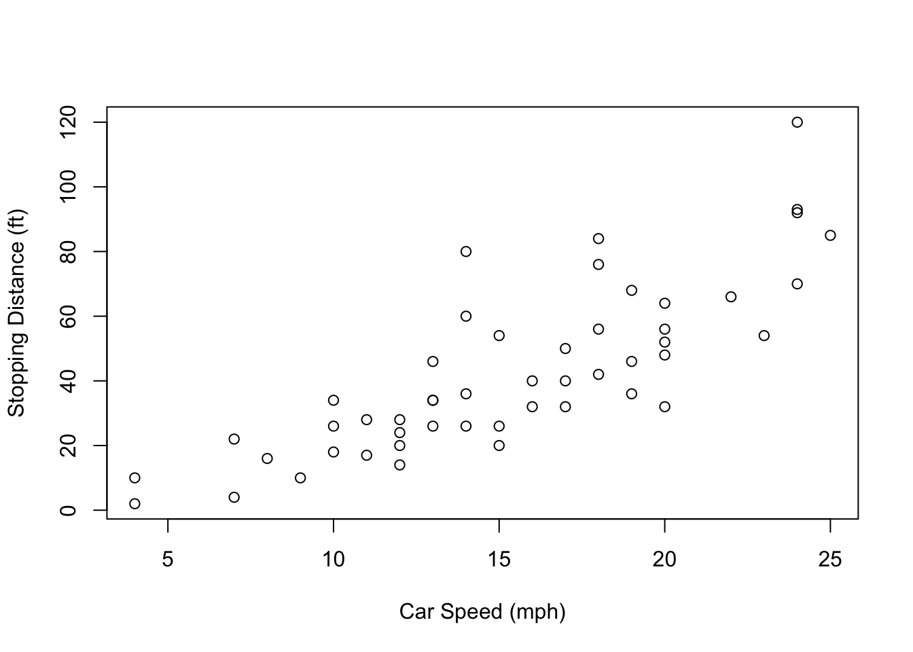
We can use the = sign or <- to store the output of a function as an object,
## These statements are identical
result = Function(data, options, moreOptions)
result <- Function(data, options, moreOptions)Try storing the output of the summary function on the cars data set. You will see the object sum_cars appear in your Environment tab.
sum_cars = summary(cars)To see what this object holds, just type its name.
sum_cars speed dist
Min. : 4.0 Min. : 2.00
1st Qu.:12.0 1st Qu.: 26.00
Median :15.0 Median : 36.00
Mean :15.4 Mean : 42.98
3rd Qu.:19.0 3rd Qu.: 56.00
Max. :25.0 Max. :120.00 Not all functions need arguments. For instance, the getwd which returns the path of your working directory.
getwd()If you want to change the working directory you can use setwd("/path/to/new_directory") or use the session menu in RStudio.
Help is also a function in R. The command below provides the help page for the function read.table
help(read.table)We can also search the help documentation using help.search. Let’s see if we can find a function for running a t-test.
help.search("t test")NOTE quotes are needed for strings (character text), they are not needed when referring to R data objects or function names.
There is a short cut for help, ?, which shows the help page for a function.
# same as help(read.table)
?read.table?? searches for help pages on functions, same as help.search(“phrase”)
# same as help.search("t test")
??"t test"Now let’s read in some data of our own. Use the read.table function to read in the table hosted at the URL below.
read.table("http://bifx-core3.bio.ed.ac.uk/data.tsv")R reads this table as a data.frame object and prints it to the R console by default. To save the table, we need to assign it to an object.
mydata <- read.table("http://bifx-core3.bio.ed.ac.uk/data.tsv")Here, mydata is an object name and the syntax <- assigns the output of the function to it. Remember you can also use =.
Key points
- Data classes: Understand different data classes (numeric, character, factor)
- R objects: Understand different ways to structure data in R (vectors, dataframes, matrices, lists). There are several other types of R object.
- Functions: Code in R is run within functions.
- Help: Use the help features to find out how a function works.
Getting data into R
For a beginner, this can be the hardest part, it is also the most important part to get right.
It is possible to create a vector by typing data directly into R using the combine function c. Think of it as a concatenate or combine function.
x <- c(1,2,3,4,5)This creates a vector named ‘x’ which stores the numbers 1-5.
You can see what is in an object at any time by typing its name:
x[1] 1 2 3 4 5Character values needs to be quoted, otherwise R will look for a data object of that name.
daysofweek <- c("Monday", "Tuesday", "Wednesday", "Thursday", "Friday")You can create data frames from vectors using the data.frame function:
table <- data.frame(Index=x,Day=daysofweek)Usually however, you will want to input data from a file. You can read files on your computer or from a URL. We have touched on the read.table function already.
mydata <- read.table("http://bifx-core3.bio.ed.ac.uk/data.tsv")R stores mydata as a data frame, containing multiple vectors.
class(mydata)[1] "data.frame"We can look at our table by typing its name, but this prints a lot of rows. Using the head() function will only print the first few lines;
head(mydata, n=5) V1 V2 V3 V4 V5
1 A B C D E
2 1 4 1 1 1
3 2 5 1 1 2
4 2 5 1 1 2
5 3 6 1 2 3You can also use the View() command to open data frames in the file pane.
Hmmm, something isn’t right with our rows here…
By default the read.table function assumes certain things from the file
- The file is a plain text file (there are separate functions to read excel files)
- Columns are separated by any number of tabs or spaces
- There are the same number of data points in each column
- There is no header row (labels for the columns)
- There is no column with names for the rows
If any of these are FALSE, we need to tell that to the function. If it has a header column use ‘header=TRUE’ argument.
mydata <- read.table("http://bifx-core3.bio.ed.ac.uk/data.tsv", header=TRUE) # header=T also worksNote the comma between different parts of the functions arguments.
This overwrites our previous table and now we should have headers.
head(mydata, n=5) A B C D E
1 1 4 1 1 1
2 2 5 1 1 2
3 2 5 1 1 2
4 3 6 1 2 3
5 3 6 1 2 3Each column can be identified by the using the $ sign (mydata$A mydata$B etc.)
If any of these are typed it will print to screen:
mydata$A [1] 1 2 2 3 3 3 3 3 4 4 4 4 4 4 4 4 4 5 5 5 5 6 6 6 7 7 8Other options for read.table
Use sep= to define how columns are separated in your input file. This file uses the tab character which we can write as ’.
mydata <- read.table("http://bifx-core3.bio.ed.ac.uk/data.tsv", header=T, sep="\t")By default, read.table assumes columns are separated by any amount of white space (space or tabs). This can lead to problems if some of your columns have missing values, so it is good practice to always give a sep argument.
If your data has missing values you can use fill=TRUE.
mydata <- read.table("http://bifx-core3.bio.ed.ac.uk/data.tsv", header=T, sep="\t", fill=TRUE)This causes R to fill empty spaces in columns with the ‘NA’ character.
As this is such a common task there are functions identical to read.table but with different default settings. e.g. read.delim and read.csv. Check out the help pages for each.
Importing Datasets
In the Environment pane in RStudio there is a button called “Import Dataset”. This can make importing data much easier and calls the read.* set of functions for you. The command used will be displayed on the console. Note that you need to have the file on the computer to use this button.
Inspecting and subsetting a dataset
Let’s use some simple functions to inspect and summarise our data.
summary(mydata) # Summary of the whole data frame A B C D
Min. :1.000 Min. : 4.000 Min. :1.000 Min. :1.000
1st Qu.:3.000 1st Qu.: 6.000 1st Qu.:1.000 1st Qu.:2.000
Median :4.000 Median : 7.000 Median :1.000 Median :3.000
Mean :4.296 Mean : 7.296 Mean :1.778 Mean :3.333
3rd Qu.:5.000 3rd Qu.: 8.000 3rd Qu.:2.000 3rd Qu.:4.000
Max. :8.000 Max. :11.000 Max. :5.000 Max. :9.000
E
Min. :1.000
1st Qu.:3.500
Median :4.000
Mean :4.407
3rd Qu.:5.000
Max. :8.000 summary(mydata$A) # Summary information for column A Min. 1st Qu. Median Mean 3rd Qu. Max.
1.000 3.000 4.000 4.296 5.000 8.000 mean(mydata$A) [1] 4.296296Try some other functions like mean, median, min and max.
order(mydata$A) # The order function sorts a vector. [1] 1 2 3 4 5 6 7 8 9 10 11 12 13 14 15 16 17 18 19 20 21 22 23 24 25
[26] 26 27We can access specific rows, columns and cells within a table using square brackets: TABLE[ROW,COLUMN]. Try the following commands.
##Print the value in the first column of the first row
mydata[1,1]
##Use blanks to print an entire row or column
mydata[2,]
mydata[,3]
##You can select multiple rows and columns with ranges (:) or the c() function
mydata[1:5,c(3,5)]
##You can also use row or column names
mydata[,"B"]
##You can select rows or columns based on criteria (subsetting).
mydata[mydata$B>7,]Challenge:
See if you can do the following:
- Select the 11th value in the third column
- Select all rows where D equals 4 (hint; use ‘==’)
- Select rows where B has its maximum value (hint: use the max function)
- Select even numbered rows only (hint: take a look at the seq function ‘?seq()’)
- Select columns A, C and E
- Sort table by decreasing order of column B (hint: look at the options in the order function)
Solution.
Solution:
- Select row 11, column 3
mydata[11,3][1] 1- Select rows where D 3 equals 4
mydata[mydata$D==4,] A B C D E
19 5 8 2 4 5
20 5 8 2 4 5
21 5 8 2 4 5- Select rows where B has its maximum value
mydata[mydata$B==max(mydata$B), ] A B C D E
27 8 11 5 9 8- Select even numbered rows only
mydata[seq(2,26, by = 2), ] A B C D E
2 2 5 1 1 2
4 3 6 1 2 3
6 3 6 1 2 4
8 3 6 1 2 3
10 4 7 1 2 4
12 4 7 1 2 5
14 4 7 1 3 4
16 4 7 1 3 4
18 5 8 2 3 5
20 5 8 2 4 5
22 6 9 3 5 6
24 6 9 3 6 6
26 7 10 4 8 7- Select columns A, C and E
mydata[, c(1,3,5)] A C E
1 1 1 1
2 2 1 2
3 2 1 2
4 3 1 3
5 3 1 3
6 3 1 4
7 3 1 3
8 3 1 3
9 4 1 4
10 4 1 4
11 4 1 4
12 4 1 5
13 4 1 5
14 4 1 4
15 4 1 4
16 4 1 4
17 4 2 4
18 5 2 5
19 5 2 5
20 5 2 5
21 5 2 5
22 6 3 6
23 6 3 6
24 6 3 6
25 7 4 7
26 7 4 7
27 8 5 8# Or mydata[,c('A','C','E')] - Sort table by decreasing order of column B
mydata[order(mydata$B, decreasing = TRUE), ] A B C D E
27 8 11 5 9 8
25 7 10 4 7 7
26 7 10 4 8 7
22 6 9 3 5 6
23 6 9 3 5 6
24 6 9 3 6 6
18 5 8 2 3 5
19 5 8 2 4 5
20 5 8 2 4 5
21 5 8 2 4 5
9 4 7 1 2 4
10 4 7 1 2 4
11 4 7 1 2 4
12 4 7 1 2 5
13 4 7 1 2 5
14 4 7 1 3 4
15 4 7 1 3 4
16 4 7 1 3 4
17 4 7 2 3 4
4 3 6 1 2 3
5 3 6 1 2 3
6 3 6 1 2 4
7 3 6 1 2 3
8 3 6 1 2 3
2 2 5 1 1 2
3 2 5 1 1 2
1 1 4 1 1 1There is a subset() function in R specifically for filtering tables. This generally works better than using square brackets as it copes well with NA and NULL values.
subset(mydata,mydata$C==3) A B C D E
22 6 9 3 5 6
23 6 9 3 5 6
24 6 9 3 6 6The tidyverse packages have their own set of functions for filtering data and we will explore these later.
Plotting with R
We recommend learning ggplot2 for graphics but it is useful to know the options available in “base” R. Remember, to get more information about the options available to a function, type ?function.
Histograms
hist(mydata$A)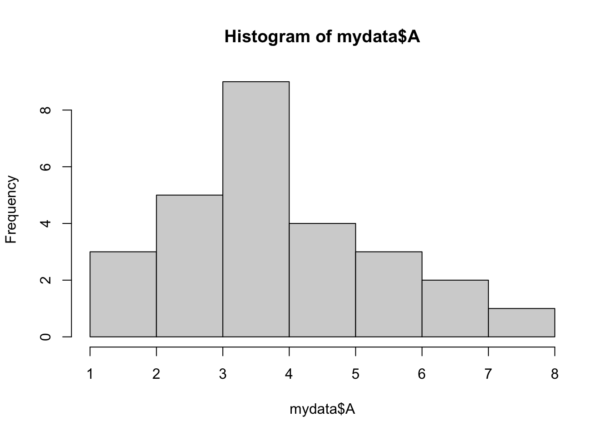
The ChickWeight data set is another data frame built into R. Using this larger set of data we can modify the number of vertical columns in a histogram with the option breaks.
hist(ChickWeight$weight, breaks=5)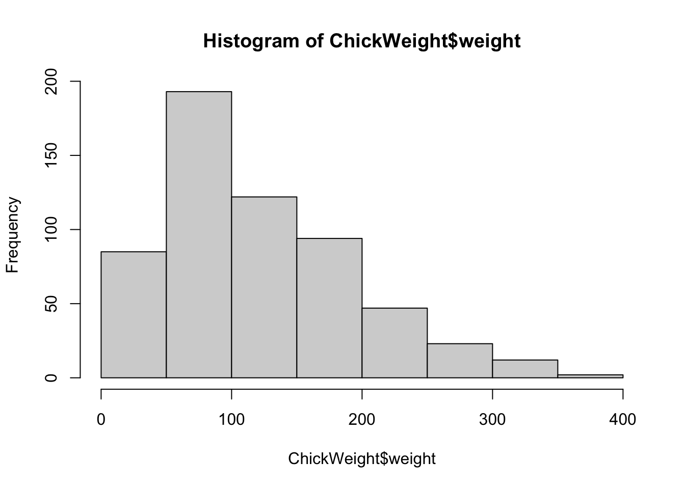
hist(ChickWeight$weight, breaks=50)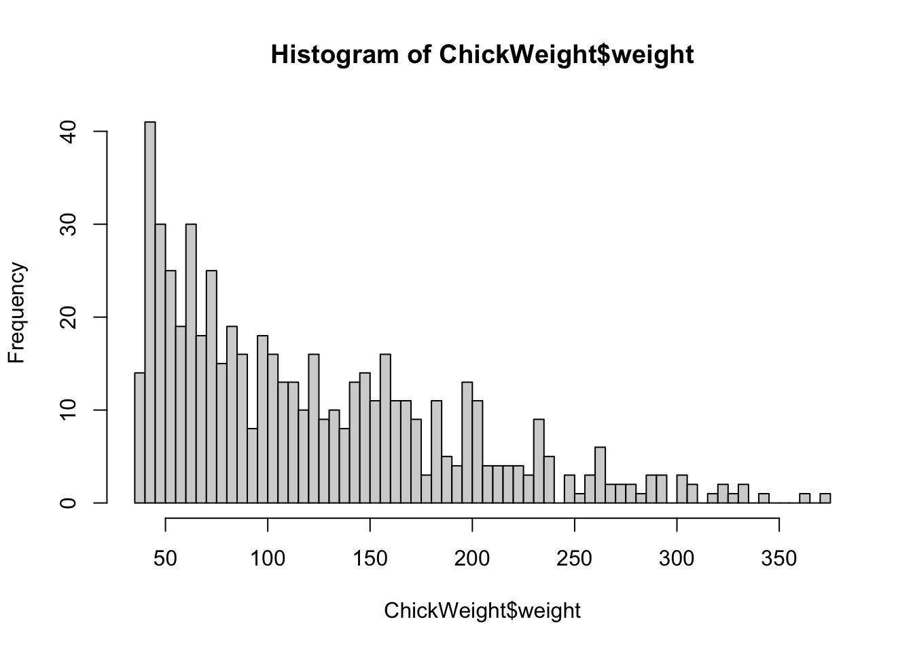
Boxplots
boxplot(mydata)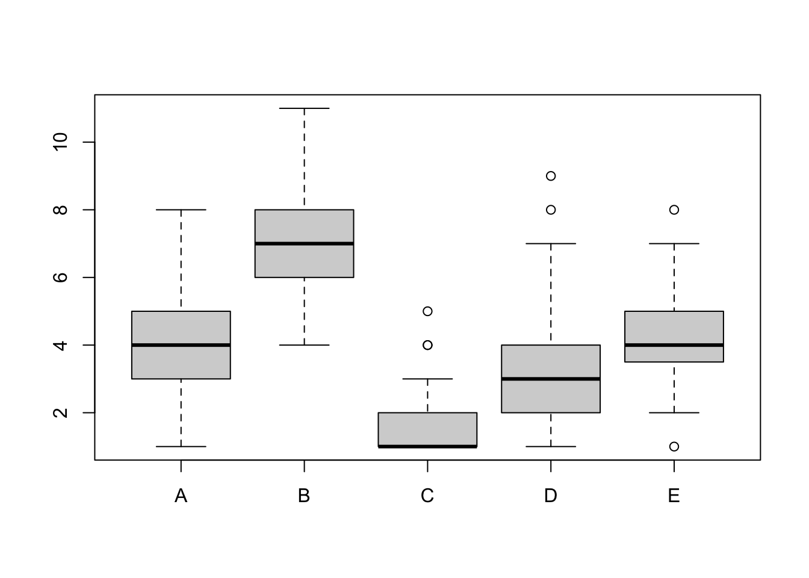
boxplot(mydata$A, mydata$B, names=c("Value A", "Value B") , ylab="Count of Something")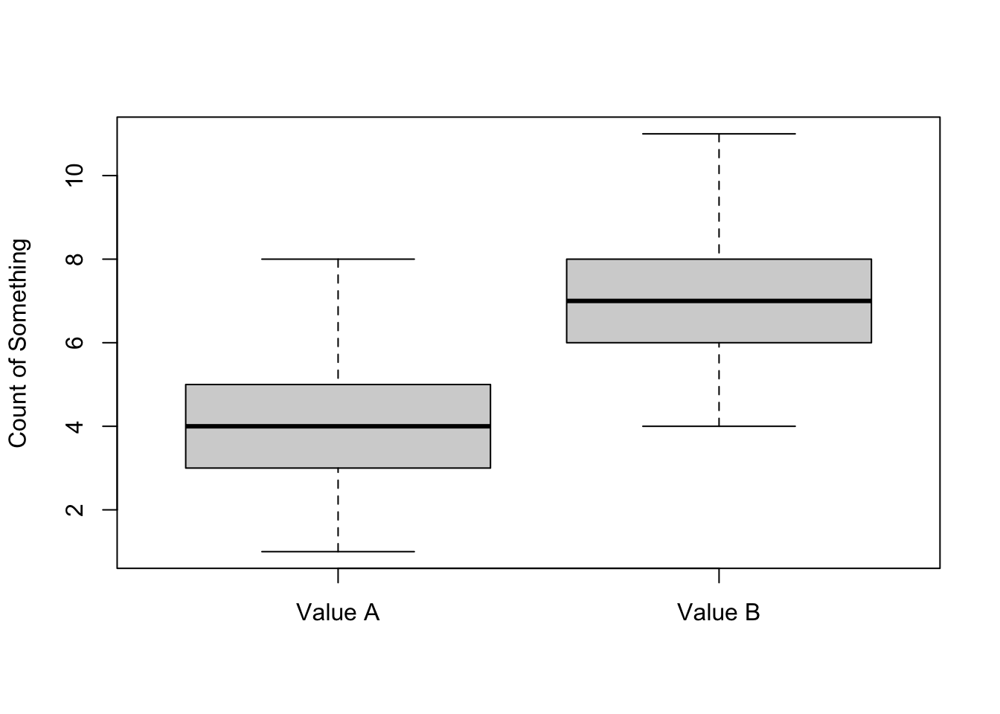
We can get rid of the need to type the data frame each time by using the attach function
attach(mydata)
boxplot(A, B, names=c("Value A", "Value B") , ylab="Count of Something")Note that the opposite function of attach is detach
detach(mydata)Scatter plots
attach(mydata) # Re-attach if neededplot(A,B) # i.e. plot(mydata$A, mydata$B)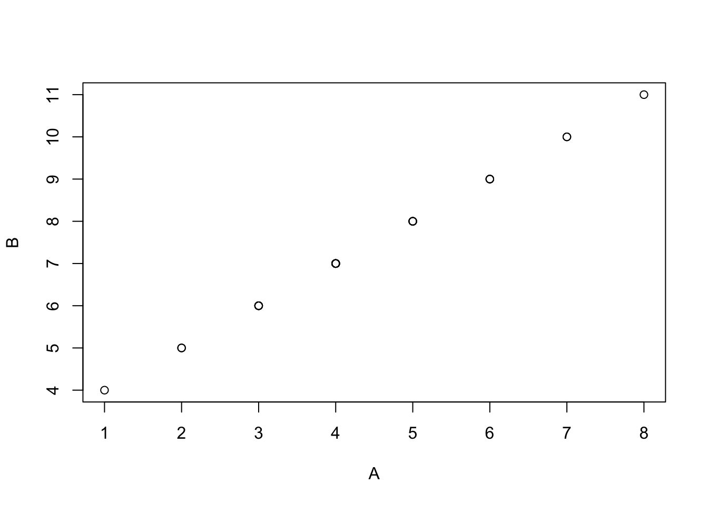
Saving images
There are a few ways to save images in RStudio:
- Use the export button in the Plots pane in Rstudio.
- Use a graphics device function in your R code.
Use the png function to save a png file (easy to load into web applications and presentations).
png("filename.png")
boxplot(A, B, names=c("Value A", "Value B") , ylab="Count of Something")
dev.off()The dev.off() function closes the graphics device. In the code above, everything between png() and dev.off() is saved to ‘filename.png’.
You can also save as a pdf.
pdf("filename.pdf")
boxplot(A, B, names=c("Value A", "Value B") , ylab="Count of Something")
dev.off()Statistical testing
R has many functions for statistical testing.
Further Resources
Please see our introduction to statistics document for more information on distributions, hypothesis testing and statistical significance.
Let’s say we want to determine whether the means of two groups of data differ statistically. First, we need to know if we are dealing with parametric or non-parametric data, i.e. are they normally distributed?
Challenge:
Plot a histogram for each vector in mydata to visualise the distributions of each dataset.
Solution.
Solution:
hist(A, breaks=5)hist(B, breaks=5)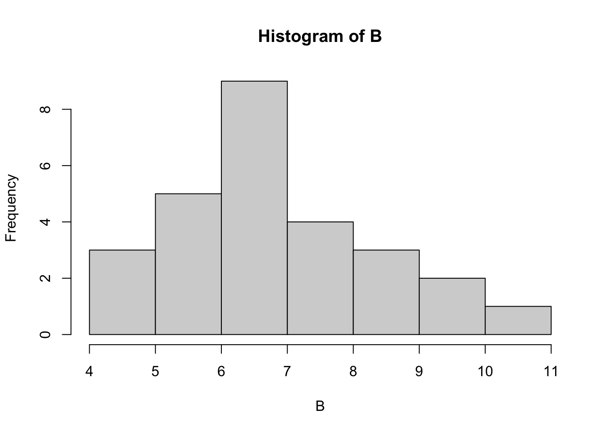
hist(C, breaks=5)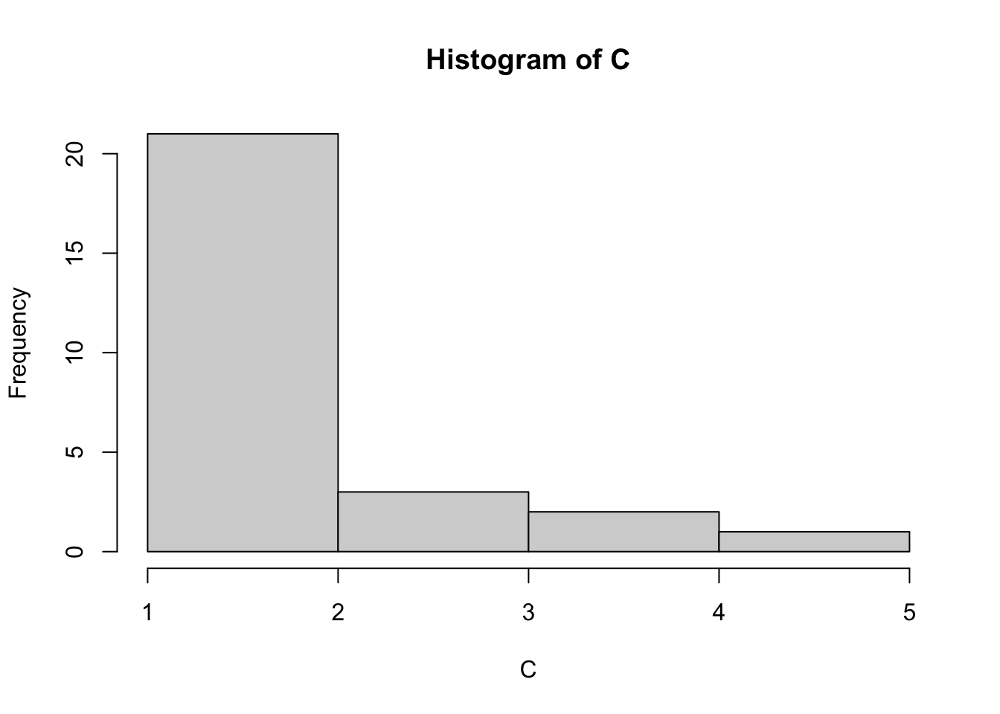
hist(D, breaks=5)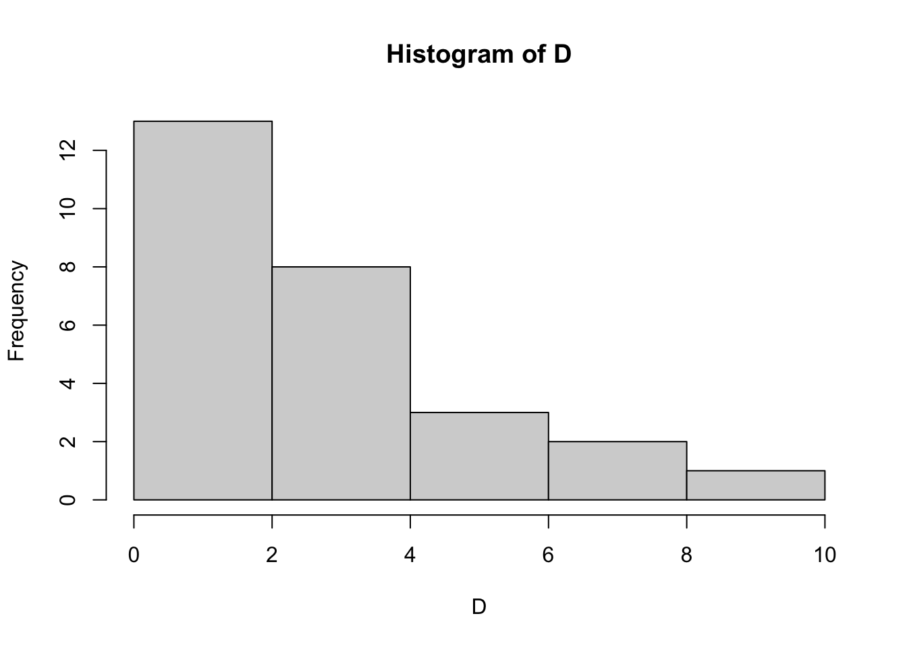
hist(E, breaks=5)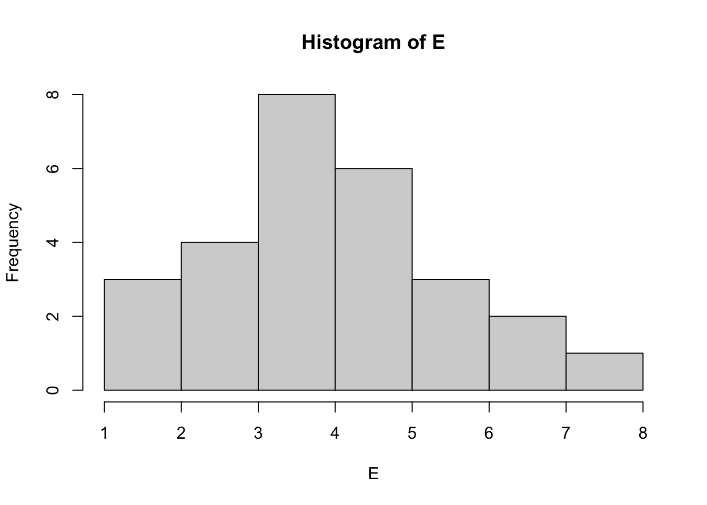
How does the data look? Do any datasets appear to be normally distributed? We can test for normality with the Shapiro Wilk test. Let’s do this for column A:
shapiro.test(A)
Shapiro-Wilk normality test
data: A
W = 0.95663, p-value = 0.3088The null hypothesis in the Shapiro Wilk test is that our data does not differ significantly from a normal distribution. So, a significant p-value (p < 0.05) means that the data is NOT normally distributed. As p here = 0.3088 (> 0.05), we conclude that A is normally distributed and can be used in a parametric test.
Challenge:
Which other columns are normally distributed?
Solution.
Solution:
shapiro.test(A)
Shapiro-Wilk normality test
data: A
W = 0.95663, p-value = 0.3088shapiro.test(B)
Shapiro-Wilk normality test
data: B
W = 0.95663, p-value = 0.3088shapiro.test(C)
Shapiro-Wilk normality test
data: C
W = 0.71936, p-value = 7.294e-06shapiro.test(D)
Shapiro-Wilk normality test
data: D
W = 0.84078, p-value = 0.0007608shapiro.test(E)
Shapiro-Wilk normality test
data: E
W = 0.96665, p-value = 0.5162A, B & E are parametric datasets.
Key points
You should only use parametric tests for parametric data!
T-Test
The assumption for a t-test is that both groups are sampled from normal distributions with approximately equal variance. We can only use this test if the data is normally distributed. As columns A and E are both normally distributed we can use a Two Sample t-test to test if the mean values are statistically different. Our null hypothesis is that the two means are equal, and the alternative is that they are not.
If our p-value is less than the significance level 0.05, we can reject the null hypothesis and accept the alternative hypothesis. In other words, we can conclude that the mean values of group A and E are significantly different.
Challenge:
Use a t-test to decide if the mean values of A and E differ more than expected by random chance. Hint: Use the help search to find the t-test function.
Solution.
Solution:
t.test(A,E)
Welch Two Sample t-test
data: A and E
t = -0.25047, df = 51.997, p-value = 0.8032
alternative hypothesis: true difference in means is not equal to 0
95 percent confidence interval:
-1.0012865 0.7790643
sample estimates:
mean of x mean of y
4.296296 4.407407 The p-value of the test is 0.8032, which is greater than the significance level 0.05. We can conclude that A and E are NOT significantly different. You can also save the result as an object and print the p-value:
a_e_result <- t.test(A,E)
a_e_result$p.value[1] 0.8032119Discussion
Are any other (parametric) columns significantly different from each other?
Non-Parametric Testing
What if we want to test non-parametric data? As D is NOT normally distributed we need to use a non-parametric test. Here we use the Mann-Whitney U test, also known as Wilcoxon rank-sum test.
wilcox.test(A,D)
Wilcoxon rank sum test with continuity correction
data: A and D
W = 503.5, p-value = 0.01496
alternative hypothesis: true location shift is not equal to 0Non parametric tests look at the ranks of values. If the same value appears multiple times in a dataset then their ranks are tied. R will output a warning if tied ranks exist. We can ignore it in this case but should be wary if there are many ties in our data.
The p-value of the test is 0.01496, which is less than the significance level alpha = 0.05. We can conclude that A is significantly different from D.
Paired samples
Paired data are sets of data from the same sample, e.g. a repeated measure or time series data. When looking at paired data, the pairs should exist in the same row of a data frame.
Load the paired dataset, ‘weight.tsv’, which contains weights of mice before and after a given treatment.
weight <- read.table("http://bifx-core3.bio.ed.ac.uk/weight.tsv", header=TRUE)
weight before after
1 200.1 392.9
2 190.9 393.2
3 192.7 345.1
4 213.0 393.0
5 241.4 434.0
6 196.9 427.9
7 172.2 422.0
8 185.5 383.9
9 205.2 392.3
10 193.7 352.2Plot the data.
boxplot(weight)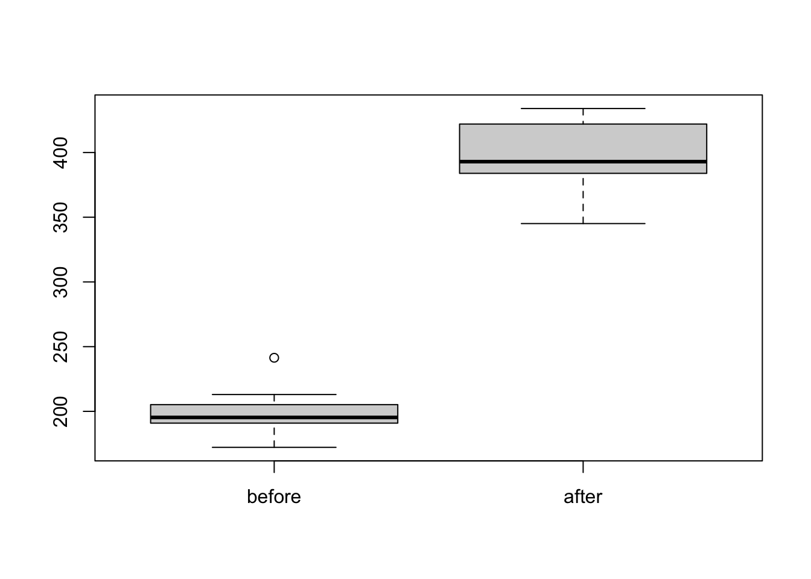
Again, before testing we first check for normality. Here we are comparing the differences between groups (Weight after MINUS Weight before).
weight$after - weight$before [1] 192.8 202.3 152.4 180.0 192.6 231.0 249.8 198.4 187.1 158.5We can add this as a new column called ‘diff’ to our table
weight$diff <- weight$after - weight$before
weight before after diff
1 200.1 392.9 192.8
2 190.9 393.2 202.3
3 192.7 345.1 152.4
4 213.0 393.0 180.0
5 241.4 434.0 192.6
6 196.9 427.9 231.0
7 172.2 422.0 249.8
8 185.5 383.9 198.4
9 205.2 392.3 187.1
10 193.7 352.2 158.5shapiro.test(weight$diff)
Shapiro-Wilk normality test
data: weight$diff
W = 0.94536, p-value = 0.6141Looks good, the p-value is greater than 0.05 implying that the distribution of the differences (d) are not significantly different from the normal distribution. In other words, we can assume normality.
We want to know if the weights before treatment are significantly different to the weights after. Let’s run the t-test. If the data is paired we use the option paired=true.
t.test(weight$before, weight$after, paired = TRUE)
Paired t-test
data: weight$before and weight$after
t = -20.883, df = 9, p-value = 6.2e-09
alternative hypothesis: true mean difference is not equal to 0
95 percent confidence interval:
-215.5581 -173.4219
sample estimates:
mean difference
-194.49 The p-value is 6.2e-09 (< = 0.05) so we can then reject the null hypothesis and conclude that the average weight of the mice after treatment is significantly different from the average weight before treatment.
In the case of a non parametric paired data set, use a paired Mann-Whitney Wilcoxon test aka Wilcoxon Signed Rank Test e.g wilcox.test(x, y, paired = TRUE).
Discussion
Have a look at the other parameters of the t.test() function. What do you think these do?
Multiple Testing
If you run multiple statistical tests on the same data then the probability of finding your results changes and you must adjust your p-values to compensate. This is known as multiple testing correction.
The easiest method is to use the function p.adjust(x), where x is a list of p-values. There is a method parameter to choose between different correction parameters. e.g.
pvals <- c(0.0001, 0.05, 0.001, 0.1, 0.1, 0.1, 0.1,0.5,0.5,0.5)
p.adjust(pvals) [1] 0.001 0.400 0.009 0.700 0.700 0.700 0.700 1.000 1.000 1.000Matrix Data and Frequency Tests
A matrix consists of values from the same data class, structured into rows and columns. You can turn a data frame into a matrix using the as.matrix() function.
mymatrix <- as.matrix(mydata)Or create one from a vector using the matrix() function (See ?matrix).
v <- c(54,66,80,20)
twoBytwo <- matrix(v, nrow=2)Which gives:
twoBytwo [,1] [,2]
[1,] 54 80
[2,] 66 20Now the matrix is saved and is called twoBytwo.
Note: nrow specifies the number of rows (alternatively you can specify the number of columns by ncol). The default parameters assume numbers in the list fill the first column, then fill the second column and so on. This can be changed by the byrow argument.
Chi-squared and Fisher’s Exact Tests (Count based data)
We can place count based data in a matrix to perform statistical tests. For instance, when observing the presence of a fluorescent marker in wild-type and mutant cells we want to know if there is a significant difference between the 2 cell types?
Wild type cells with marker present: 54
Wild type cells with marker absent: 66
Mutant cells with marker present: 80
Mutant cells with marker absent: 20Fortunately we have this already in the twoBytwo matrix, and the values in v.
You can change the default column and row names with the colnames and rownames function:
colnames(twoBytwo) <- c("WT", "Mut")rownames(twoBytwo) <- c("pres", "abs")twoBytwo WT Mut
pres 54 80
abs 66 20The Chi-squared test function chisq.test() works on matrices. It is a type of likelihood ratio test:
chisq.test(twoBytwo)
Pearson's Chi-squared test with Yates' continuity correction
data: twoBytwo
X-squared = 26.612, df = 1, p-value = 2.486e-07As the p-value 0.0000002486 is less than 0.05, we can reject the null hypothesis and conclude that these cell types are significantly different.
A Fisher’s exact test is generally preferred over a Chi-squared test as it is more robust to low numbers. However, it can only be used to compare two groups, while a Chi-squared can also be used to compare three or more.
fisher.test(twoBytwo)
Fisher's Exact Test for Count Data
data: twoBytwo
p-value = 1.029e-07
alternative hypothesis: true odds ratio is not equal to 1
95 percent confidence interval:
0.1055182 0.3899188
sample estimates:
odds ratio
0.2061251 Final Challenge:
In this challenge we are going to perform statistical analysis to see if the weights of 10 rabbits increase after a hypothetical experimental treatment. First prepare the data:
# The data set
# Weight of the rabbit before treatment
before <-c(190.1, 190.9, 172.7, 213, 231.4,
196.9, 172.2, 285.5, 225.2, 113.7)
# Weight of the rabbit after treatment
after <-c(392.9, 313.2, 345.1, 393, 434,
227.9, 422, 383.9, 392.3, 801.2)
# Create a data frame
rabbits <- data.frame(
sample=c(1:10), ##Assign sampleIDs
before=before,
after=after
)Consider the following:
- Plot the data first. What is the best way to visualise this?
- Are the values independent or paired?
- Should you use a parametric or non-parametric test?
- Which test will you use?
- What is the alternative hypothesis?
- Are the groups significantly different?
- What is the confidence interval?
Solution.
Solution:
Visualise:
boxplot(rabbits$before,rabbits$after)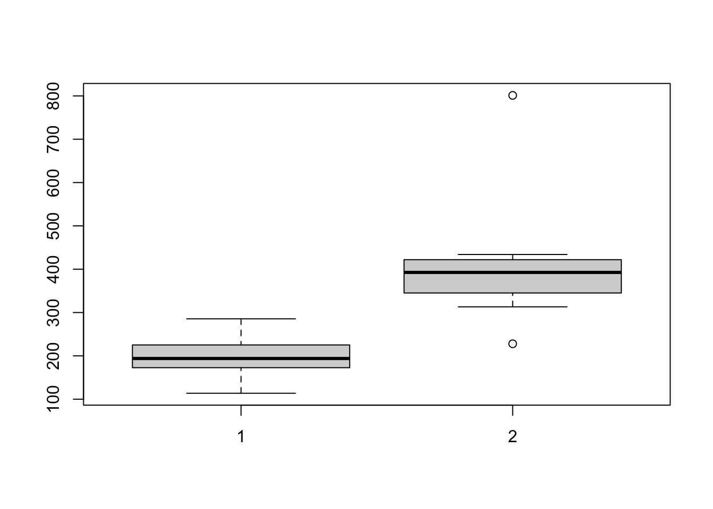
Test for normality:
shapiro.test(rabbits$after-rabbits$before)
Shapiro-Wilk normality test
data: rabbits$after - rabbits$before
W = 0.70287, p-value = 0.0009544We reject the Null hypothesis that the difference in weights is normally distributed, so we must use a non parametric test.
The data is paired and our null hypothesis is that the weight after treatment is not greater than the weight before. We therefore have a one-sided test and use “greater” as our alternative hypothesis. We include the option to produce confidence intervals:
wilcox.test(rabbits$after, rabbits$before, paired = TRUE,alternative = "greater",conf.int = T)
Wilcoxon signed rank exact test
data: rabbits$after and rabbits$before
V = 55, p-value = 0.0009766
alternative hypothesis: true location shift is greater than 0
95 percent confidence interval:
122.3 Inf
sample estimates:
(pseudo)median
176.2 Further Learning
Further examples are available on the sthda website.
The rstatix package is useful for applying statistical tests on tables of data and is compatible with the Tidy data structures and pipes that we will learn later on in these lessons. Here is an example which you can return to later.
## Use the ToothGrowth dataset built into R
library(rstatix)
library(ggpubr)
df <- ToothGrowth
df$dose <- as.factor(df$dose)
head(df) len supp dose
1 4.2 VC 0.5
2 11.5 VC 0.5
3 7.3 VC 0.5
4 5.8 VC 0.5
5 6.4 VC 0.5
6 10.0 VC 0.5## Group the data by dose and run a t_test between the two groups for each dose.
stat.test <- df %>%
group_by(dose) %>%
t_test(len ~ supp) %>%
adjust_pvalue() %>%
add_significance("p.adj")
stat.test# A tibble: 3 × 11
dose .y. group1 group2 n1 n2 statistic df p p.adj
<fct> <chr> <chr> <chr> <int> <int> <dbl> <dbl> <dbl> <dbl>
1 0.5 len OJ VC 10 10 3.17 15.0 0.00636 0.0127
2 1 len OJ VC 10 10 4.03 15.4 0.00104 0.00312
3 2 len OJ VC 10 10 -0.0461 14.0 0.964 0.964
# ℹ 1 more variable: p.adj.signif <chr>## Plot out the results and add adjusted p-value
ggboxplot(
df, x = "supp", y = "len",
color = "supp", palette = "jco", facet.by = "dose",
ylim = c(0, 40)
) +
stat_pvalue_manual(stat.test, label = "p.adj", y.position = 35)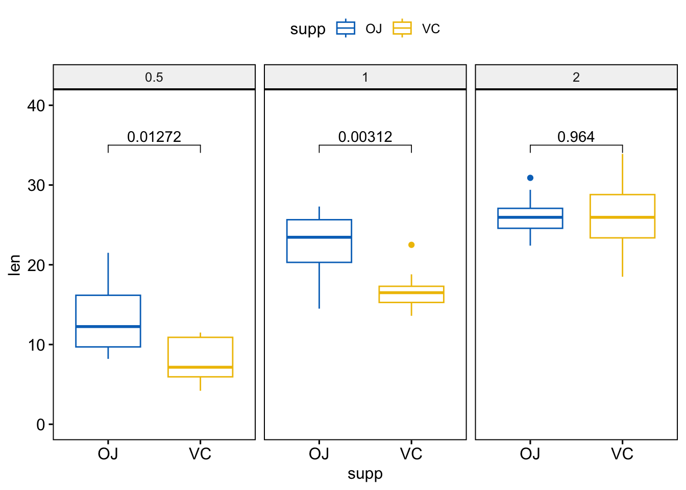
Key points
- R is a functional programming language
- RStudio is an interactive environment for programming in R
- Base R functions can be used to import, manipulate and plot data
- There are many functions for statistical analysis in R